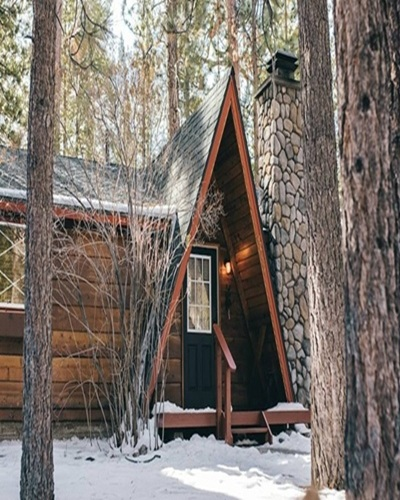
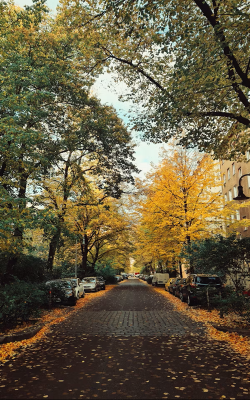
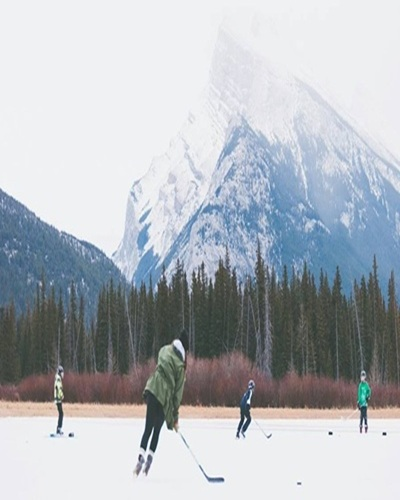
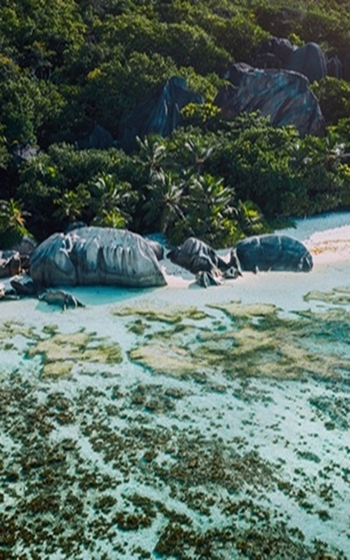
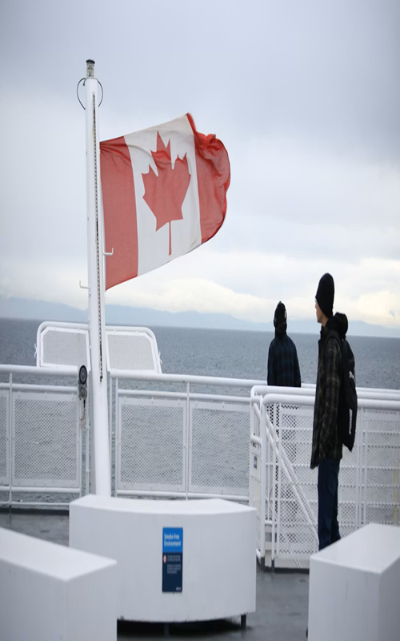
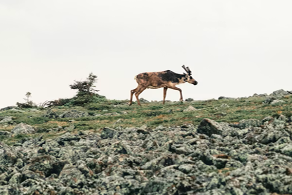

QUAND PARTIR AU CANADA?
Pendant votre circuit au Canada vous verrez que le pays s'étend sur 6 des 24 fuseaux horaires du globe. Terre-Neuve et le Labrador ont 4h30 d'avance sur la Colombie-Britannique. Le Canada est à GMT-5 à Montréal et GMT-8 à Victoria, c'est à dire qu'en été, il y a 6 heures de décalage (quand il est 12h00 à Rennes, il est 6h00 à Montréal et il est 3h00 à Victoria). A titre indicatif, Terre-Neuve a 4h30 de décalage avec la France ; la côte atlantique, 5h00 ; les provinces de l’est, 6h00 ; du centre, 7h00 ; les Rocheuses, 8h00 et la côte pacifique, 9h00. On passe à l'heure d'été le premier dimanche d'avril, on avance alors les pendules d'une heure ; et on revient à l'heure d'hiver le dernier dimanche d'octobre. A noter : le Saskatchewan ne change pas d’heure en été. Dans les provinces anglophones, l’heure est indiquée par des chiffres allant de 1 à 12, complétés par les lettres AM (ante meridiem, « avant-midi ») ou PM (post meridiem, « après-midi »). Par exemple, 11 AM est pour 11h00 et 11 PM, pour 23h00.
-

1De Québec au Nouveau-Brunswick- À la rencontre de l'Acadie
De parcs naturels en villages côtiers, faire la rencontre d'une province aussi culturelle que maritime. Ce parcours traverse plusieurs régions du Québec et du Nouveau-Brunswick reconnues pour leurs paysages naturels et leur patrimoine francophone. Les visiteurs peuvent y découvrir des villages acadiens, des plages, des phares et des sites historiques importants. Le voyage met en valeur les traditions acadiennes à travers la musique, la cuisine et les festivals locaux. Les touristes ont l’occasion de rencontrer des communautés chaleureuses et accueillantes fières de leur identité culturelle. Le circuit offre également des activités variées comme les randonnées, les excursions maritimes et la découverte de la gastronomie régionale. Plusieurs arrêts permettent d’explorer des lieux emblématiques liés à l’histoire des Acadiens. Ce voyage constitue une expérience éducative et culturelle enrichissante pour les visiteurs. Il favorise la découverte du patrimoine francophone de l’est du Canada. Ce site touristique attire chaque année de nombreux voyageurs intéressés par l’histoire, la nature et la culture acadienne.
16 jours, de 4500$ à 5500$

-

2 De Vancouver aux Rocheuses-L'Ouest canadien en train d'exception
Vancouver est une grande ville côtière située dans l’ouest du Canada, reconnue pour ses paysages entre océan et montagnes. La ville possède un climat plus doux que plusieurs autres régions canadiennes et offre une vie culturelle dynamique. Les visiteurs apprécient ses parcs, son port et ses quartiers modernes.
Les Rocheuses canadiennes constituent l’une des plus belles régions naturelles du pays avec leurs sommets enneigés, leurs lacs turquoise et leurs forêts immenses. Plusieurs voyageurs découvrent cette région grâce au célèbre train touristique Rocky Mountaineer, reconnu pour ses trajets panoramiques exceptionnels. Le voyage permet d’admirer des paysages spectaculaires entre Vancouver, Banff et Jasper. Cette expérience combine confort, nature et aventure dans l’Ouest canadien.
10 jours, de 7500$ à 10000$
-

3 Toronto, Niagara, lac Ontario-Road-trip sauvage et refuges au bord de l'eau
Toronto est la plus grande ville du Canada et un important centre économique, culturel et touristique. La ville est connue pour ses gratte-ciels modernes, ses quartiers multiculturels et sa célèbre Tour CN. Toronto possède aussi de nombreux musées, restaurants et espaces verts qui attirent des millions de visiteurs chaque année.
La région de Niagara Falls est mondialement connue pour ses impressionnantes chutes d’eau situées à la frontière entre le Canada et les États-Unis. Les Chutes du Niagara représentent l’une des attractions touristiques les plus célèbres du pays. Les visiteurs peuvent faire des croisières près des chutes, admirer les illuminations nocturnes et explorer les vignobles de la région. Toronto et Niagara sont reliées par une route touristique populaire offrant de magnifiques paysages. Ces deux destinations combinent parfaitement vie urbaine moderne et beauté naturelle exceptionnelle.
10 jours, de 4500$ à 6500$
-

4 Du Pacifique aux Rockies-Family trip à travers l'Ouest canadien
Le voyage « Du Pacifique aux Rockies » permet de découvrir l’Ouest canadien en famille à travers des paysages variés et spectaculaires. L’aventure commence généralement sur la côte du Pacifique, dans la région de Vancouver, reconnue pour son ambiance moderne et ses magnifiques vues sur l’océan. Les familles peuvent profiter des plages, des parcs et des activités culturelles adaptées à tous les âges.
Le parcours continue ensuite vers les Rocheuses canadiennes où l’on découvre des montagnes impressionnantes, des lacs turquoise et une faune exceptionnelle. Les villes touristiques de Banff et Jasper offrent plusieurs activités familiales comme la randonnée, le canot et les promenades panoramiques. Ce type de voyage permet aux visiteurs de vivre une expérience à la fois relaxante, éducative et aventureuse. L’Ouest canadien est une destination idéale pour créer des souvenirs inoubliables en famille.
17 jours, de 5600$ à 8500$
-
5 Yukon et Alaska- Summertime sur la dernière frontière
Le Yukon est un vaste territoire situé dans le nord-ouest du Canada, reconnu pour ses paysages sauvages et ses montagnes impressionnantes. La région est célèbre pour ses aurores boréales, ses forêts et ses grands espaces naturels. La capitale du Yukon est Whitehorse, une petite ville dynamique entourée de nature. Le territoire attire les amateurs d’aventure, de randonnée et de camping. Le parc national de Parc national et réserve de parc national Kluane possède certains des plus hauts sommets du Canada.
L’Alaska, située à l’ouest du Yukon, est le plus grand État des États-Unis. Cette région est connue pour ses glaciers, ses montagnes enneigées et sa faune impressionnante comme les ours et les orignaux. La ville principale est Anchorage. L’Alaska possède aussi de nombreux fjords et parcs naturels protégés. Le Yukon et l’Alaska partagent un climat nordique ainsi qu’une histoire liée à la ruée vers l’or du Klondike. Ces deux régions représentent des destinations touristiques populaires pour les amoureux de la nature et des grands espaces.
05 jours, de 3000$ à 4500$
Le circuit touristique « Yukon et Alaska – Summertime sur la dernière frontière » permet de découvrir les grands espaces sauvages du nord-ouest de l’Amérique du Nord durant la saison estivale. Ce voyage traverse le Yukon et l’Alaska, deux régions reconnues pour leurs paysages spectaculaires et leur nature préservée. Les visiteurs explorent des montagnes majestueuses, des glaciers impressionnants et de vastes forêts boréales.
Le parcours inclut souvent la ville de Whitehorse ainsi que plusieurs sites naturels emblématiques. Les voyageurs peuvent observer des animaux sauvages comme les ours, les orignaux et les aigles. Certaines excursions passent par le célèbre Parc national et réserve de parc national Kluane et le Parc national Denali. Ce circuit offre une expérience unique mêlant aventure, découverte culturelle et immersion dans la nature nordique.
-

6Le Canada est une destination idéale pour les passionnés de vie sauvage grâce à ses immenses espaces naturels et sa biodiversité exceptionnelle. Le pays abrite plusieurs animaux emblématiques comme les ours noirs, les grizzlis, les orignaux, les loups et les baleines. Les visiteurs peuvent observer cette faune dans de nombreux parcs nationaux et réserves naturelles.
Des régions comme Parc national Banff, Parc national Jasper et Parc national Pacific Rim sont très populaires pour l’observation des animaux sauvages. En été, les touristes peuvent faire des safaris nature, des excursions en bateau et des randonnées guidées. Certaines régions côtières permettent aussi d’observer les baleines dans leur habitat naturel. Le Canada offre ainsi une expérience unique aux amoureux de la nature et de l’aventure.
01 jour, de 30$ à 100$